Sidang Etika Digital
Naik level: dari tahu menjadi menganalisis, menilai, dan merancang pemulihan.
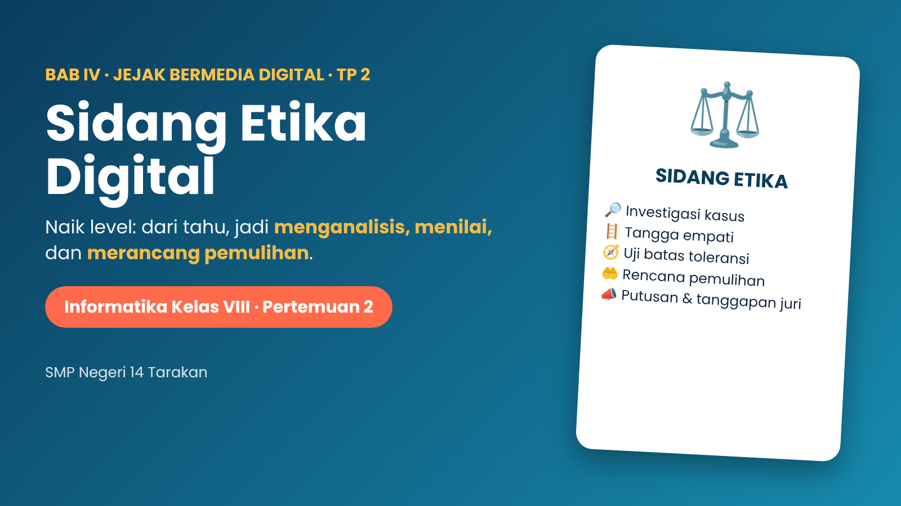
1. Naik Level!
Di pertemuan 1 kamu sudah tahu dan bisa menerapkan toleransi, empati, dan netiket. Hari ini levelnya naik: kamu jadi detektif etika yang menganalisis kasus, menilai tindakan, dan merancang pemulihan, lalu menyampaikan putusan di Sidang Etika Digital.
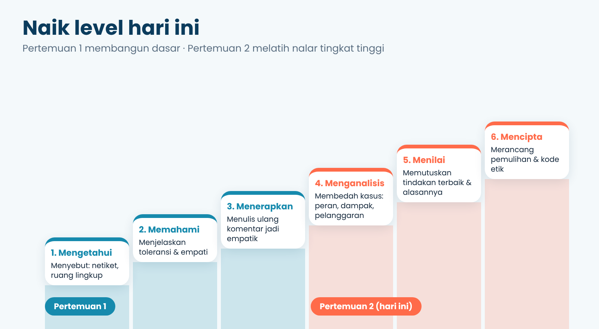
Menganalisis kasus (peran, tangga empati, batas toleransi) · menilai dan memutuskan · merancang rencana pemulihan dan kode etik.
KUDA 1 · Kuis Dadakan
⚡ KUDA 1 · Pilihan Ganda (ingat kembali)
Dani tidak setuju dengan pendapat Lia di kolom komentar. Tanggapan yang paling mencerminkan toleransi sekaligus empati adalah …
2. Kenapa Orang Jadi Kasar di Dunia Maya?
Efek disinhibisi daring: kenapa orang jadi kasar di dunia maya?
Psikolog John Suler (2004) menyebut gejala ini online disinhibition effect: kendali diri ("rem") melemah ketika orang berinteraksi lewat layar. Orang yang sopan di kelas bisa menulis komentar kejam di kolom komentar.
- Tak terlihat: wajah dan ekspresi lawan bicara tidak tampak, sehingga sulit melihat bahwa ia terluka.
- Tak langsung (asinkron): kita tidak melihat reaksinya saat itu juga.
- Merasa samar/anonim: akun tanpa nama atau foto membuat orang merasa aman dari akibat.
- "Cuma dunia maya": interaksi dianggap seperti game, bukan hubungan dengan manusia sungguhan.
- Merasa tak ada pengawas: tidak ada guru atau orang tua yang melihat.
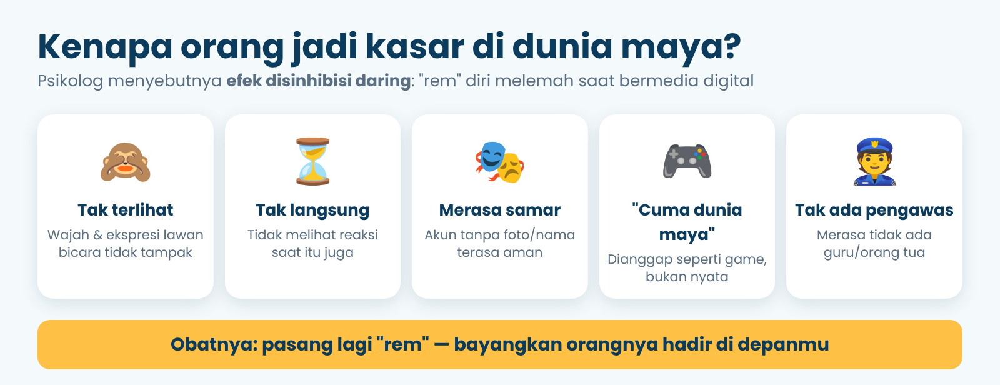
Penangkalnya: pasang kembali "rem" dengan membayangkan orangnya hadir di depanmu, jeda 5 detik, dan tanya "Beranikah aku mengatakannya langsung?"
Miskonsepsi: "Kalau akunnya anonim, tidak ada akibatnya." Faktanya, tangkapan layar, jejak digital, dan laporan dapat melacak perilaku; yang terpenting, korban tetap terluka.
3. Empati Naik Level
Tiga jenis empati
Pada pertemuan 1 empati dipahami sebagai "ikut merasakan". Hari ini kita membedakannya menjadi tiga bentuk yang saling melengkapi.
- Empati kognitif: memahami sudut pandang dan alasan orang lain. Contoh: "Aku paham ia kesal karena sudah berlatih lama tetapi tidak terpilih."
- Empati afektif: ikut merasakan emosi orang lain. Contoh: "Membaca ceritanya, dadaku ikut sesak."
- Welas asih (compassion): tergerak bertindak membantu setelah memahami dan merasakan. Contoh: mengirim pesan dukungan dan menemani teman melapor.
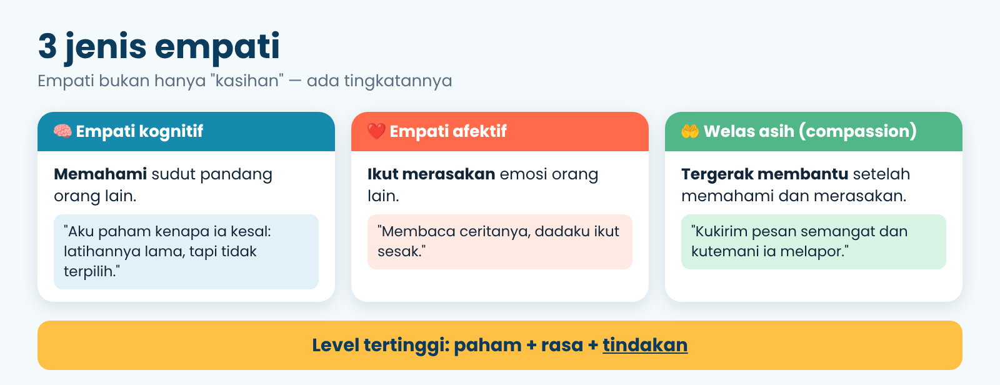
Empati yang berhenti pada perasaan saja belum cukup. Level tertinggi adalah paham + rasa + tindakan.
Miskonsepsi: "Empati = kasihan." Kasihan sering membuat kita merasa lebih tinggi; empati menempatkan kita sejajar dan mendorong tindakan yang menghormati.
Tangga empati: alat analisis tokoh
Tangga empati dipakai untuk memetakan posisi tiap tokoh dalam sebuah kasus.
- 1. Abai: "Bukan urusanku."
- 2. Sadar: menyadari ada yang terluka.
- 3. Paham: mengerti sebab dan sudut pandang.
- 4. Rasa: ikut merasakan emosinya.
- 5. Tindak: berbuat (mendukung, melapor, memperbaiki).
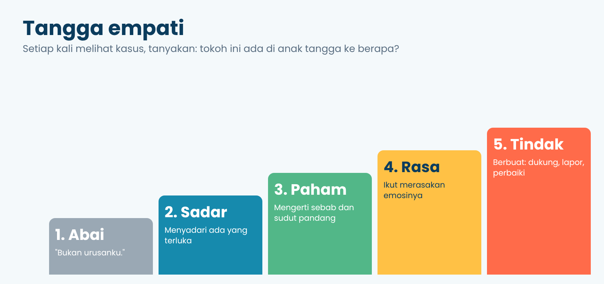
Cara memakai: untuk setiap tokoh, tulis anak tangga yang ia capai beserta buktinya (kutipan atau perilaku), bukan tebakan.
Hindari menilai niat. Nilailah perilaku yang tampak pada bukti.
KUDA 2 · Mencocokkan
⚡ KUDA 2 · Mencocokkan
Cocokkan pernyataan berikut dengan konsep yang tepat.
4. Batas Toleransi
Toleransi punya batas
Filsuf Karl Popper menyebut paradoks toleransi: jika sebuah masyarakat menoleransi segala hal, termasuk yang menghancurkan toleransi itu sendiri, maka toleransi akan hilang. Karena itu kita menoleransi perbedaan, bukan perundungan atau ujaran kebencian.
- Ditoleransi: beda pendapat dan selera, beda budaya dan logat, beda keyakinan (tanpa memaksa), kritik sopan terhadap gagasan.
- Tidak ditoleransi: hinaan terhadap suku, agama, atau fisik (SARA), perundungan dan ancaman, hoaks dan penipuan, penyebaran data atau foto tanpa izin.
- Tes 3 pertanyaan: (1) Yang diserang gagasan atau orang/kelompoknya? (2) Apakah merendahkan identitas? (3) Apakah membuat orang takut atau terkucil? Jika salah satu "ya", batas terlewati.
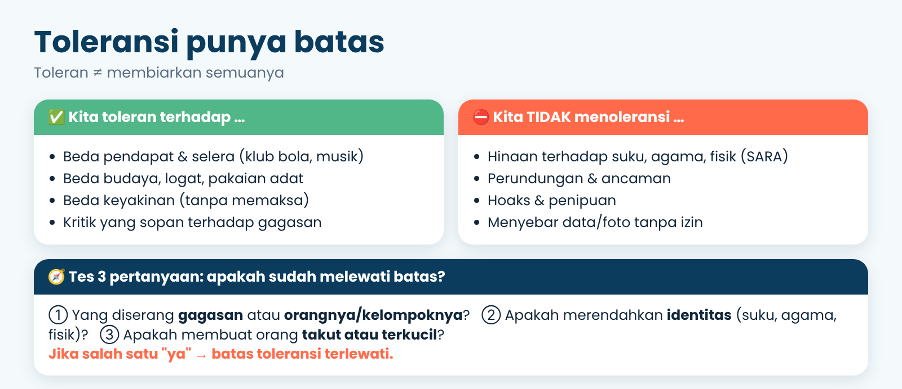
Menolak ujaran kebencian bukan sikap tidak toleran; itu cara menjaga ruang aman bagi semua.
Miskonsepsi: "Toleran berarti membiarkan semuanya." Toleransi adalah menghargai perbedaan, bukan membiarkan orang disakiti.
5. Spektrum Komentar
Spektrum komentar (5 level)
Komentar tidak hanya "baik" atau "jahat". Ada gradasi yang membantu kita mengevaluasi dan memperbaiki tanggapan.
- Level 1 Menyerang: "Dasar bodoh!"
- Level 2 Menyindir: "Lumayan lah, buat pemula 😏"
- Level 3 Netral: "Fotonya diambil di Tarakan?"
- Level 4 Kritik membangun: "Warnanya bagus, garisnya bisa dirapikan."
- Level 5 Mendukung: "Keren! Semangat terus!"
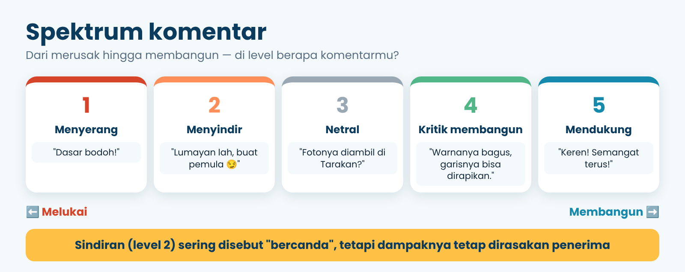
Sasaran kelas: bergerak dari level 1–2 menuju level 4–5. Sindiran sering disebut "bercanda", tetapi dampaknya tetap dirasakan penerima.
Miskonsepsi: "Kritik = menjatuhkan." Kritik membangun menyebut hal baik, hal yang bisa diperbaiki, dan caranya.
KUDA 3 · Analisis Komentar
⚡ KUDA 3 · Pilihan Ganda (analisis)
Komentar "Lumayan lah, buat pemula 😏" pada spektrum komentar termasuk level …
6. Peran Saksi dan Pembela
Empat peran dalam satu kejadian
Dalam kasus perundungan atau ujaran buruk daring, selalu ada lebih dari dua pihak.
- Pelaku: menyerang atau menyebarkan.
- Korban: dirugikan atau terluka.
- Penonton: diam, memberi like, atau ikut share, yang pada kenyataannya memperkuat pelaku.
- Pembela (upstander): berani membantu dengan cara yang aman.
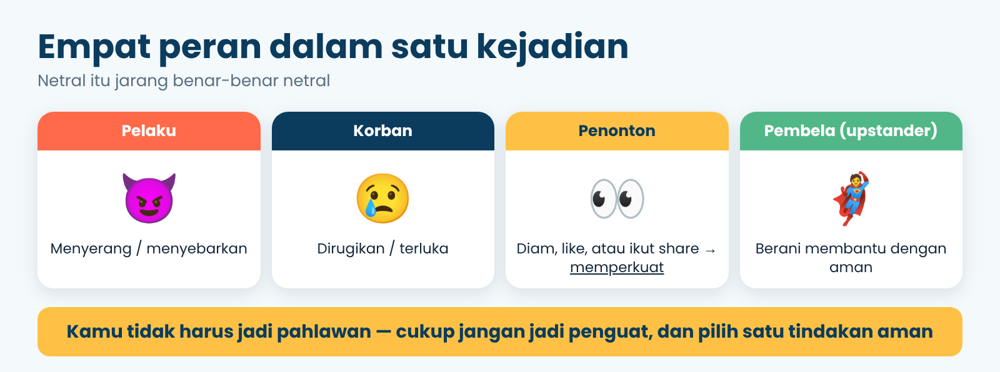
Netral jarang benar-benar netral. Kamu tidak harus menjadi pahlawan; cukup jangan menjadi penguat dan pilih satu tindakan aman.
Miskonsepsi: "Aku cuma like, bukan pelaku." Like dan share menambah jangkauan dan membuat korban merasa dikeroyok.
Empat tindakan pembela yang aman
Pilih tindakan sesuai situasi. Keselamatan dan kenyamananmu juga penting.
- Jangan ikut menyebar: tidak like, share, atau screenshot untuk bahan ejekan.
- Dukung korban secara pribadi: "Aku di pihakmu. Kamu tidak sendirian."
- Tanggapi dengan tenang: singkat, sopan, menyerang perilakunya bukan orangnya.
- Laporkan: gunakan fitur lapor, atau beri tahu guru/wali kelas/BK/orang tua.
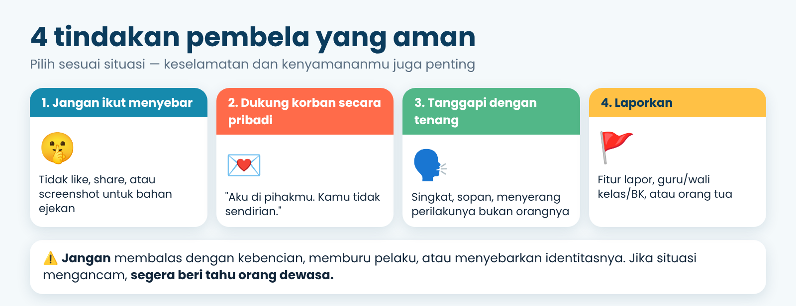
Jangan membalas dengan kebencian, memburu pelaku, atau menyebarkan identitasnya. Jika situasi mengancam, segera beri tahu orang dewasa.
KUDA 4 · Essay Singkat
⚡ KUDA 4 · Essay singkat
Kamu penonton yang melihat temanmu diejek di kolom komentar. Sebutkan DUA tindakan aman yang bisa kamu lakukan dan SATU tindakan yang sebaiknya tidak kamu lakukan.
7. Tangga Eskalasi Konflik
Tangga eskalasi konflik daring
Konflik daring naik bertahap. Mengenali anak tangga membantu kita menemukan titik rem.
- 1 Salah paham → tahan dan klarifikasi.
- 2 Debat memanas → minta jeda atau pindah ke obrolan pribadi.
- 3 Hinaan → berhenti membalas dan simpan bukti (screenshot).
- 4 Keroyokan/penyebaran → laporkan dan jangan ikut menyebar.
- 5 Perundungan → minta bantuan orang dewasa (dibahas lebih dalam pada TP 3).
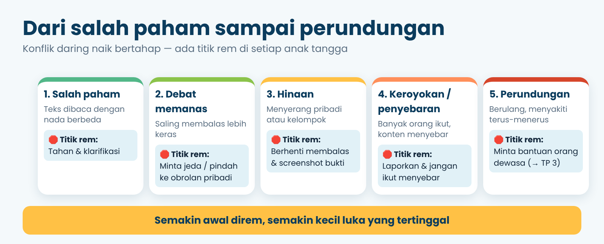
Semakin awal direm, semakin kecil luka yang tertinggal.
Posisi materi dalam literasi digital
Kerangka literasi digital Kemenkominfo dan Siberkreasi memiliki empat pilar: Cakap, Budaya, Etis, dan Aman Digital. Toleransi dan empati terutama berada pada pilar Budaya (nilai Pancasila, kebinekaan, toleransi) dan Etis (netiket, tanggung jawab, empati).
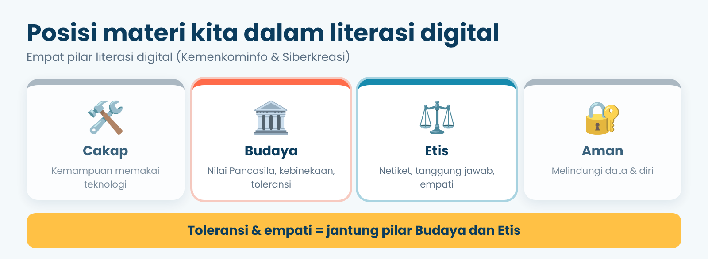
Kegiatan hari ini melatih pilar Budaya dan Etis; pilar Aman (data pribadi) ikut tersentuh pada Kasus 1 dan 6.
8. Sidang Etika Digital
Kelas dibagi menjadi tim investigator. Setiap tim mendapat satu berkas kasus fiktif, menyelidiki dengan 8 langkah, memutuskan, lalu menyampaikan putusan 3 menit di depan juri.
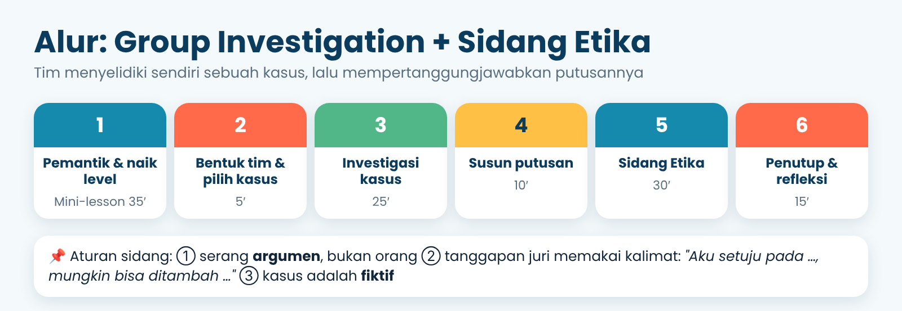
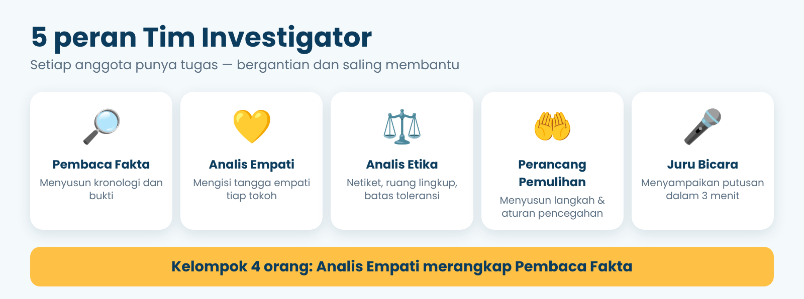
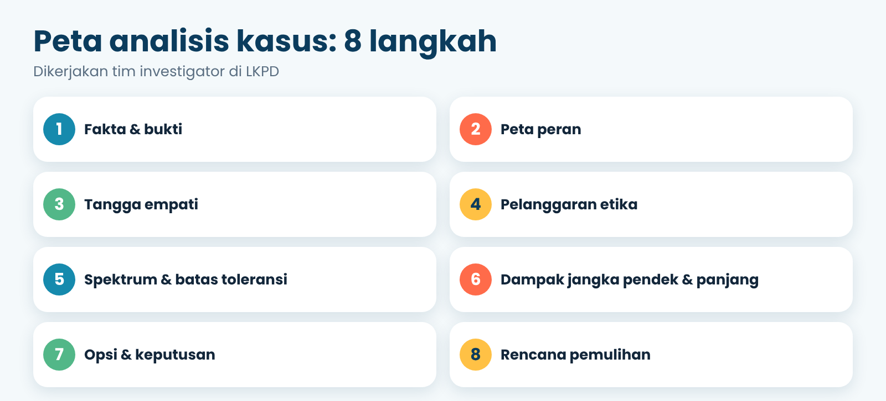
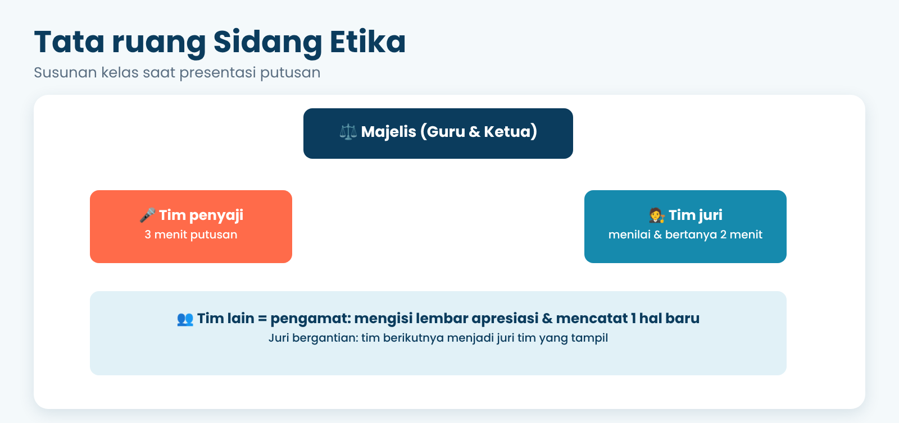
9. Berkas Kasus (latihan mandiri)
Buka tiap berkas, baca bukti, jawab pertanyaan pemandu, lalu cocokkan dengan contoh analisis.
K1 · Meme Wajah Teman ★
Rio mengedit foto Tia menjadi meme "wajah kaget" dan mengirimnya ke tiga grup. Tia meminta foto dihapus, tetapi Rio menganggapnya lucu-lucuan. Bima malah meminta meme dikirim ke grup futsal.
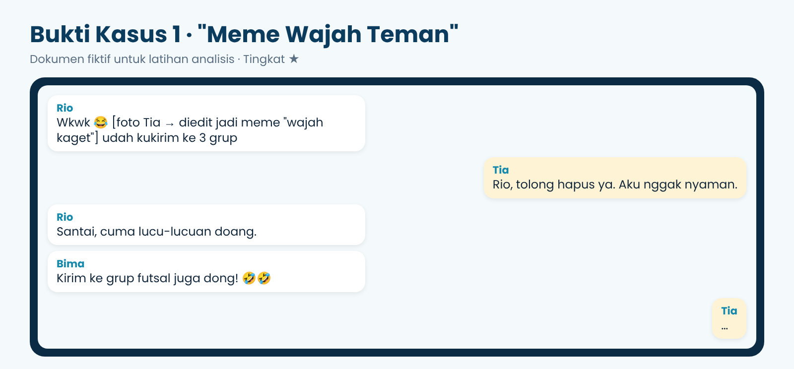
Pertanyaan pemandu
- Siapa yang dirugikan, dan bagaimana kamu tahu?
- Mengapa "cuma lucu-lucuan" tidak cukup sebagai alasan?
- Apa peran Bima, dan mengapa penting?
Lihat contoh analisis
| Aspek | Contoh jawaban |
|---|---|
| Peta peran | Pelaku: Rio (pembuat/penyebar). Penguat: Bima (meminta dan menyebarkan lagi). Korban: Tia. Pembela: belum ada. |
| Tangga empati | Rio: anak tangga 1–2 (Abai/Sadar). Ia mendengar permintaan Tia tetapi menepisnya: "cuma lucu-lucuan". Bima: anak tangga 1 (Abai); justru memperluas penyebaran. Tia: terlihat tertekan; balasan "…" menandakan ia merasa tidak didengar. |
| Pelanggaran etika | Netiket: minta izin sebelum mengunggah atau mengirim foto orang; berpikir dulu sebelum posting; menghargai privasi. Ruang lingkup: tanggung jawab dan integritas (tidak mengakui dampak). |
| Spektrum | Level 2 (menyindir/"bercanda") yang dampaknya setara level 1. |
| Batas toleransi | Terlewati: menyebarkan foto tanpa izin dan mempermalukan teman. |
| Dampak | Pendek: malu, takut ke sekolah, foto sudah di tiga grup. Panjang: jejak digital sulit dihapus, kepercayaan teman berkurang. |
| Opsi dan putusan | A. Diamkan saja. B. Tia membalas keras. C. Rio menghapus dan meminta maaf, Bima berhenti menyebar, guru/BK mendampingi. Pilihan terbaik: C. |
| Rencana pemulihan |
|
K2 · Perang Komentar Klub Bola ★★
Dafa dan Ilham berbeda klub favorit. Komentar saling menghina berubah menjadi generalisasi tentang "orang sana". Sinta mencoba mendinginkan suasana tetapi diejek.
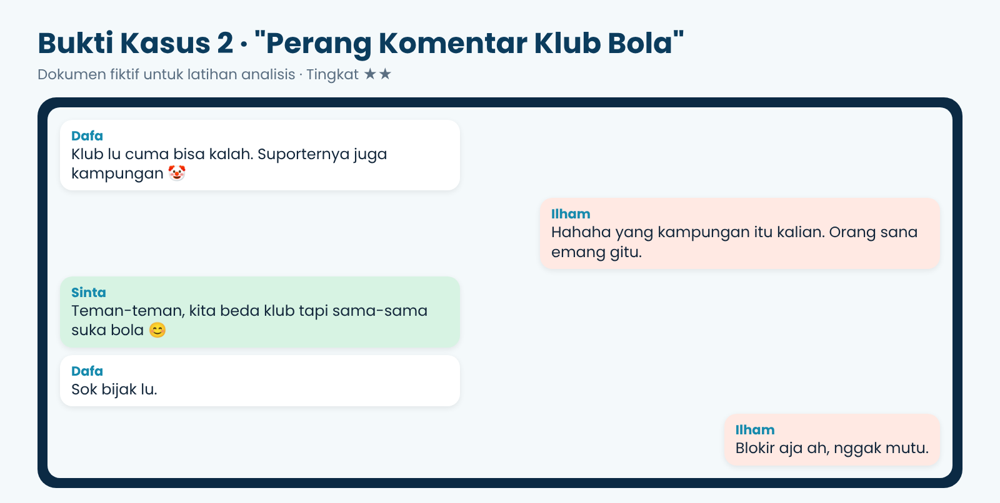
Pertanyaan pemandu
- Bagian mana yang masih boleh ditoleransi dan bagian mana yang tidak?
- Mengapa Sinta tidak berhasil meredakan suasana?
- Titik rem apa yang bisa dipakai pada anak tangga eskalasi?
Lihat contoh analisis
| Aspek | Contoh jawaban |
|---|---|
| Peta peran | Pelaku/saling serang: Dafa dan Ilham. Pembela: Sinta (upaya meredakan). Penonton: pembaca komentar lain. |
| Tangga empati | Dafa: anak tangga 1 (Abai); menyerang suporter dengan kata "kampungan". Ilham: anak tangga 1–2; membalas dengan generalisasi daerah ("orang sana emang gitu"). Sinta: anak tangga 4–5 (mencoba menengahi) tetapi belum aman; diejek. |
| Pelanggaran etika | Netiket: menjaga bahasa, tidak menyerang pribadi/kelompok; etika: kesadaran dan integritas. Disinhibisi: kata kasar yang tak akan diucapkan tatap muka. |
| Spektrum | Dafa level 1; Ilham level 1 (disertai generalisasi); Sinta level 5. |
| Batas toleransi | Beda klub **ditoleransi**; menghina suporter/daerah ("kampungan", "orang sana emang gitu") **melewati batas** karena menyerang kelompok. |
| Dampak | Pendek: suasana panas, saling blokir. Panjang: pertemanan retak, label negatif pada daerah tertentu. |
| Opsi dan putusan | A. Ikut membela klub dengan balas hina. B. Meninggalkan kolom komentar tanpa tindakan. C. Menyatakan beda klub itu wajar, menghentikan hinaan, mengajak kembali ke topik pertandingan. Terbaik: C (dengan dukungan teman agar Sinta tidak sendirian). |
| Rencana pemulihan |
|
K3 · Admin Grup yang Berkuasa ★★
Putri mengkritik jadwal piket yang dirasa tidak adil. Reza, admin grup, menyuruhnya keluar lalu mengeluarkannya. Nanda hanya diam.
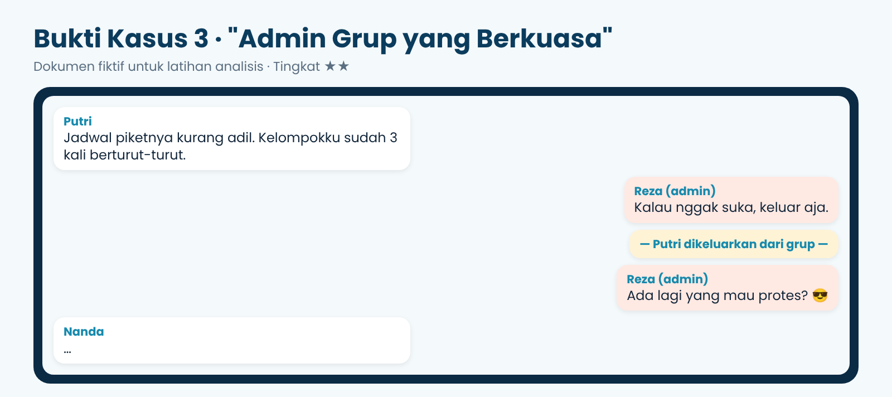
Pertanyaan pemandu
- Apakah kritik Putri melewati batas toleransi? Mengapa?
- Siapa yang tidak toleran dalam kasus ini?
- Apa tanggung jawab seorang admin?
Lihat contoh analisis
| Aspek | Contoh jawaban |
|---|---|
| Peta peran | Pelaku: Reza (admin). Korban: Putri. Penonton: Nanda dan anggota grup lain. Pembela: belum ada. |
| Tangga empati | Reza: anak tangga 1 (Abai); menutup ruang diskusi dan memamerkan kuasa ("😎"). Nanda: anak tangga 2 (Sadar) tetapi tidak bertindak. Putri: kritiknya relevan; ia dikeluarkan sehingga suaranya hilang. |
| Pelanggaran etika | Netiket: menghargai pendapat dan waktu orang lain; tanggung jawab sebagai admin. Integritas: kuasa dipakai untuk membungkam. |
| Spektrum | Putri level 4 (kritik membangun, meski bisa lebih ramah). Reza level 1–2 (mengusir dan menyindir). |
| Batas toleransi | Kritik sopan terhadap gagasan **harus ditoleransi**. Yang melewati batas: mengucilkan Putri dan membuat anggota lain takut bersuara. |
| Dampak | Pendek: Putri terkucil, anggota lain takut mengkritik. Panjang: masalah piket tidak selesai, budaya grup menjadi tidak sehat. |
| Opsi dan putusan | A. Putri membuat grup tandingan. B. Anggota diam demi aman. C. Putri dimasukkan kembali, jadwal piket dibahas terbuka, aturan grup dibuat bersama. Terbaik: C. |
| Rencana pemulihan |
|
K4 · Logat dan Asal Daerah ★★★
Agus, siswa pindahan, mengunggah video presentasi. Komentar mengejek logatnya dan menyebut sukunya. Maya membelanya, lalu dituduh "satu suku". Agus akhirnya menghapus videonya.
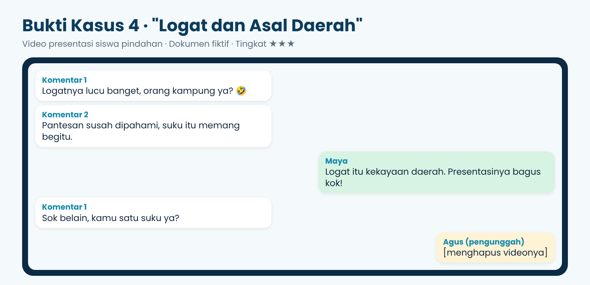
Pertanyaan pemandu
- Mengapa kasus ini melewati batas toleransi?
- Apa risiko yang ditanggung Maya, dan bagaimana kelas bisa melindunginya?
- Apa tindakan upstander paling aman bagi penonton lain?
Lihat contoh analisis
| Aspek | Contoh jawaban |
|---|---|
| Peta peran | Pelaku: Komentar 1 dan 2. Korban: Agus. Pembela: Maya (dan ia ikut diserang). Penonton: pembaca lain yang diam. |
| Tangga empati | Komentar 1–2: anak tangga 1 (Abai) dan kuat terindikasi disinhibisi (akun samar). Maya: anak tangga 5 (Tindak) secara terbuka; berani dan tepat. Agus: menarik diri dengan menghapus video, tanda ia terluka. |
| Pelanggaran etika | Netiket: menghargai perbedaan budaya dan tidak menyebarkan SARA. Etika: kebajikan dan kesadaran. Pilar Budaya Digital (kebinekaan). |
| Spektrum | Komentar 1–2 level 1 (menyerang identitas). Maya level 5. |
| Batas toleransi | Jelas **melewati batas**: merendahkan logat dan suku (SARA) dan menuduh pembela "satu suku". |
| Dampak | Pendek: malu dan menarik diri. Panjang: ia takut tampil/berbicara, stereotip suku tertanam, budaya kelas menjadi tidak ramah pendatang. |
| Opsi dan putusan | A. Mengabaikan karena "cuma komentar". B. Membalas dengan hinaan serupa. C. Mendukung Agus secara pribadi, melaporkan komentar, kelas mengadakan sesi apresiasi keberagaman logat, Agus bebas memutuskan mengunggah ulang. Terbaik: C. |
| Rencana pemulihan |
|
K5 · Hoaks "Sekolah Libur" ★★★
Ghani meneruskan pesan berantai bahwa sekolah libur karena banjir tanpa mengecek sumbernya. Salwa bertanya sumber tetapi diabaikan. Beberapa orang tua percaya, siswa tidak berangkat.
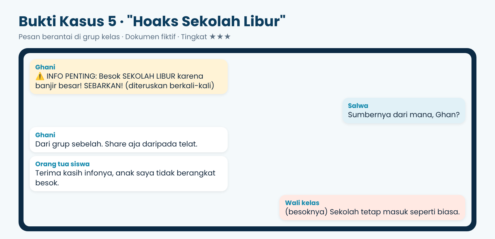
Pertanyaan pemandu
- Apa bedanya niat dan dampak dalam kasus ini?
- Langkah apa yang seharusnya dilakukan Ghani sebelum meneruskan pesan?
- Mengapa hoaks tidak boleh ditoleransi?
Lihat contoh analisis
| Aspek | Contoh jawaban |
|---|---|
| Peta peran | Penyebar: Ghani. Pembela (kognitif): Salwa yang meminta sumber. Korban: siswa yang tertinggal pelajaran dan orang tua yang dirugikan. |
| Tangga empati | Ghani: anak tangga 2 (Sadar) niatnya membantu, tetapi empati kognitifnya belum mencakup dampak bagi orang tua. Salwa: anak tangga 3–4; menanyakan sumber (kritis dan peduli). Orang tua: percaya karena pesan tampak resmi dan dikirim teman sekolah. |
| Pelanggaran etika | Netiket: cek kebenaran sebelum meneruskan; etika: tanggung jawab dan integritas. Pilar Etis dan Cakap Digital. |
| Spektrum | Ghani level 3 (netral dalam bentuk tetapi merugikan). Salwa level 4. |
| Batas toleransi | Hoaks **tidak ditoleransi** meskipun niatnya baik, karena dampaknya nyata. |
| Dampak | Pendek: siswa bolos, kebingungan orang tua. Panjang: kepercayaan terhadap informasi di grup menurun; pembuat pesan bisa dianggap pembohong. |
| Opsi dan putusan | A. Menghapus pesan diam-diam. B. Menyalahkan orang tua yang percaya. C. Klarifikasi dan minta maaf di grup, pakai satu sumber resmi, ajarkan "Saring sebelum sharing". Terbaik: C. |
| Rencana pemulihan |
|
K6 · Prank yang Kebablasan ★★★★
Fikri mengunci Dimas di gudang olahraga selama 10 menit, merekamnya, lalu mengunggahnya sebagai "prank". Banyak yang menertawakan. Dimas mengaku takut kepada Rani lewat pesan pribadi tetapi tidak berani melapor.
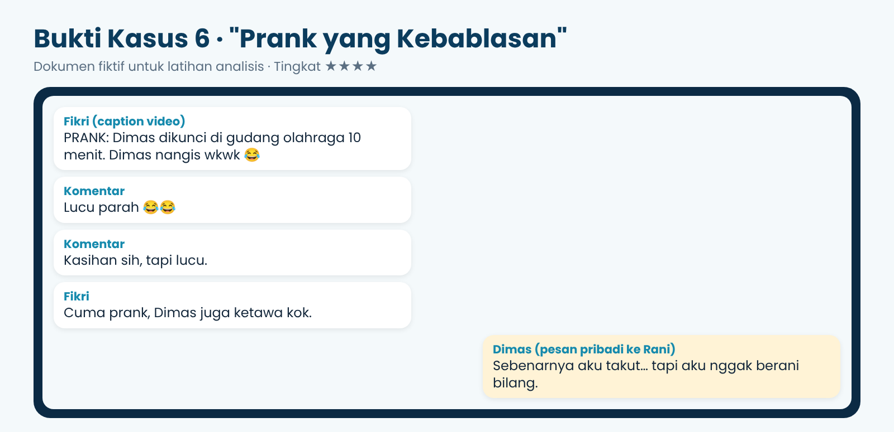
Pertanyaan pemandu
- Mengapa tawa Dimas bukan tanda persetujuan?
- Apa dilema yang dihadapi Rani dan keputusanmu?
- Di anak tangga eskalasi mana kasus ini berada, dan apa titik remnya?
Lihat contoh analisis
| Aspek | Contoh jawaban |
|---|---|
| Peta peran | Pelaku: Fikri. Penguat: pemberi komentar "lucu". Korban: Dimas. Calon pembela: Rani. |
| Tangga empati | Fikri: anak tangga 1 (Abai); menganggap tawa sama dengan persetujuan. Komentator: anak tangga 1–2; "kasihan sih, tapi lucu" menunjukkan sadar tetapi tetap menertawakan. Rani: anak tangga 3–4; tahu perasaan Dimas, berada di persimpangan antara menjaga rahasia dan menolong. |
| Pelanggaran etika | Pembatasan kebebasan seseorang dan penyebaran video yang mempermalukan: pelanggaran berat terhadap netiket dan etika; berpotensi perundungan. Aman Digital: konten korban tanpa izin. |
| Spektrum | Fikri level 1; komentator level 2. |
| Batas toleransi | **Melewati batas** jelas: membuat orang takut dan mempermalukan, bukan canda. |
| Dampak | Pendek: trauma, takut ke sekolah. Panjang: kepercayaan diri turun, risiko perundungan berulang, dampak psikologis. |
| Opsi dan putusan | A. Rani menjaga rahasia sepenuhnya. B. Rani mengunggah balasan mempermalukan Fikri. C. Rani mendukung Dimas, mengajaknya melapor bersama, atau melapor kepada guru/BK sambil meminta identitas Dimas dilindungi. Terbaik: C karena keselamatan Dimas lebih utama daripada janji rahasia. |
| Rencana pemulihan |
|
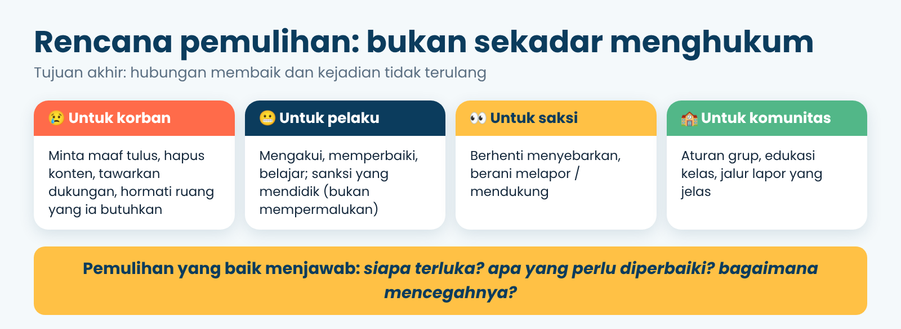
KUDA 5 · Evaluasi
⚡ KUDA 5 · Pilihan Ganda (evaluasi)
Manakah tindakan berikut yang MELEWATI batas toleransi?
10. Garis Sikap dan Piagam
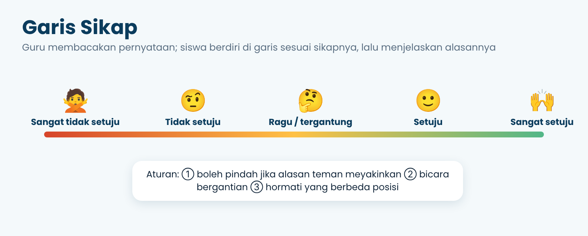
Pikirkan: kamu berdiri di posisi mana untuk pernyataan "Bercanda boleh asalkan tidak ada yang marah"? Apa alasanmu?
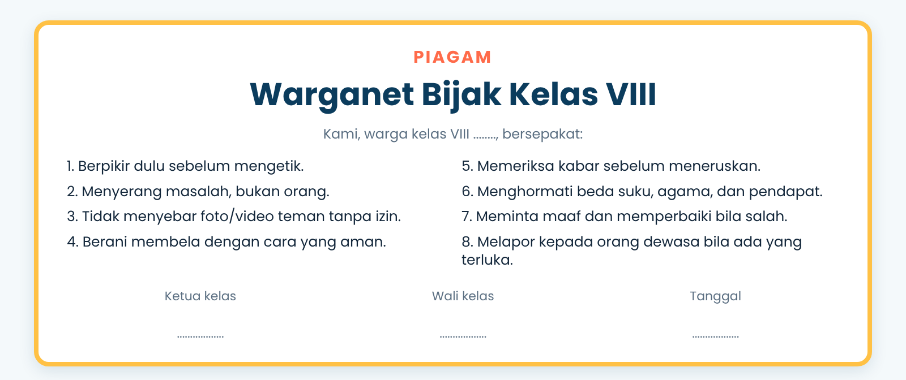
11. Kuis Akhir (10 soal)
12. Rangkuman & Refleksi
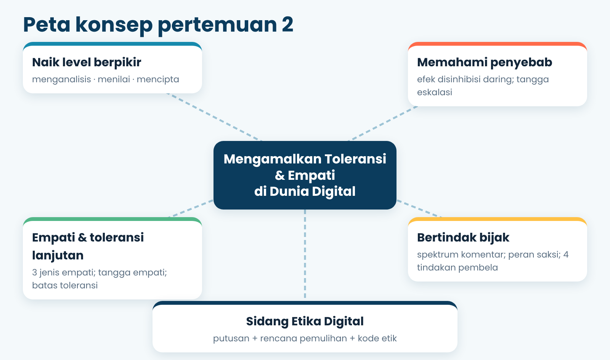
- Disinhibisi daring: merasa tak terlihat membuat "rem" diri melemah; pasang lagi rem-mu.
- Empati: kognitif (paham), afektif (rasa), welas asih (tindak); nilai dengan tangga empati.
- Batas toleransi: ditoleransi = beda gagasan/selera; tidak ditoleransi = SARA, perundungan, hoaks, sebar data tanpa izin.
- Komentar: usahakan level 4–5.
- Saksi: jangan jadi penguat; pilih tindakan aman. Eskalasi: rem sedini mungkin.
Dulu aku berpikir … sekarang aku berpikir …
Satu aturan piagam yang kupraktikkan minggu ini:
Sumber: Buku Siswa Informatika VIII (Ed. Revisi 2024) Bab IV; Suler, J. (2004) The Online Disinhibition Effect; Popper, K. The Open Society and Its Enemies (1945) tentang paradoks toleransi; Kemenkominfo & Siberkreasi, Kerangka Literasi Digital. Kasus bersifat fiktif.